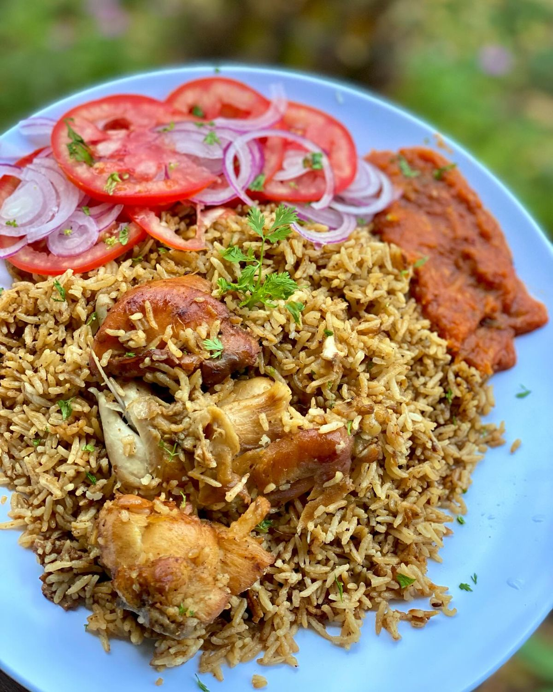
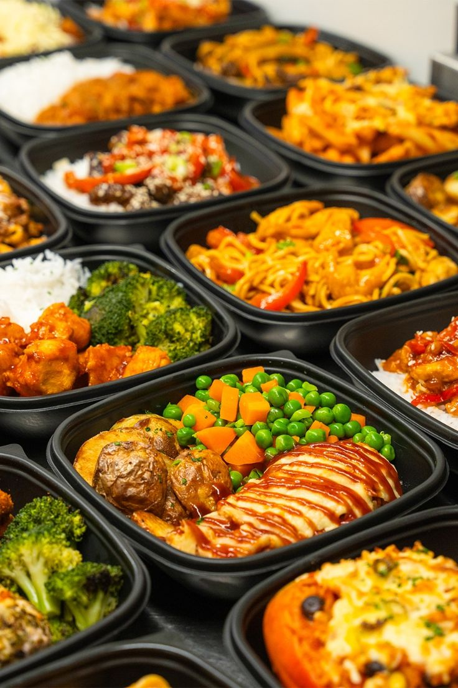
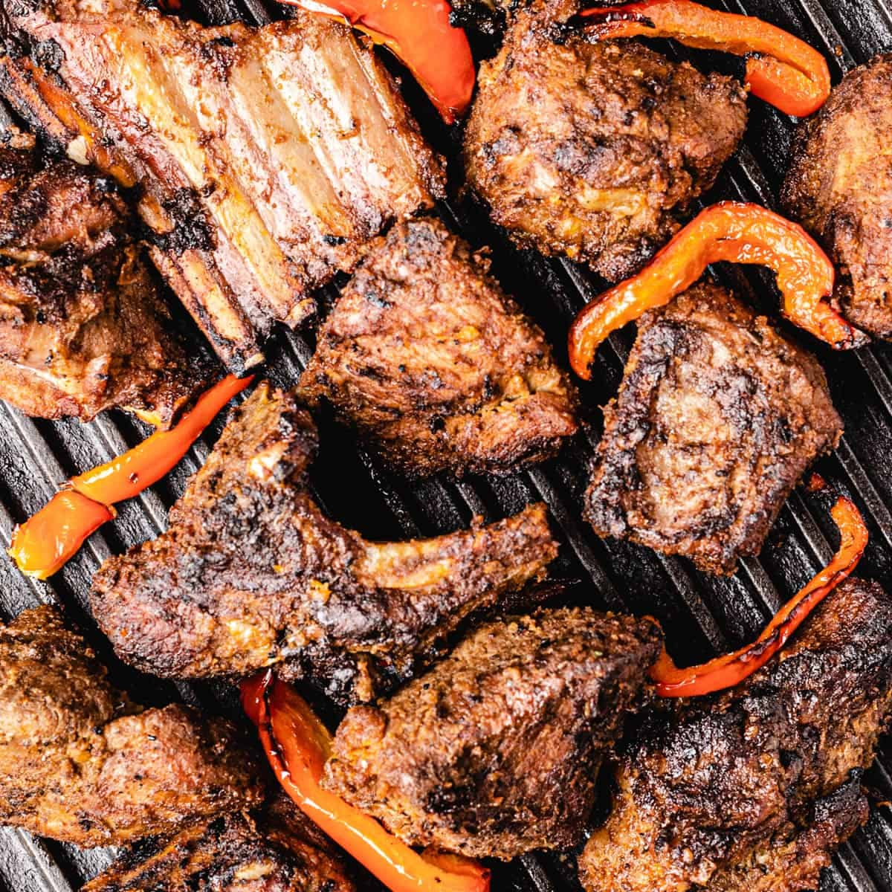
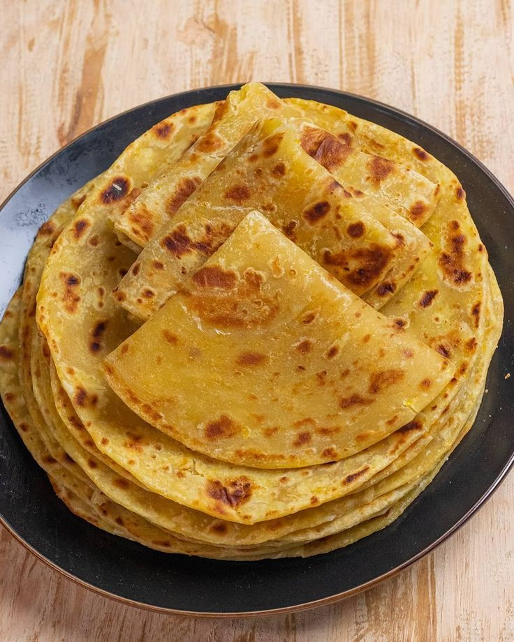
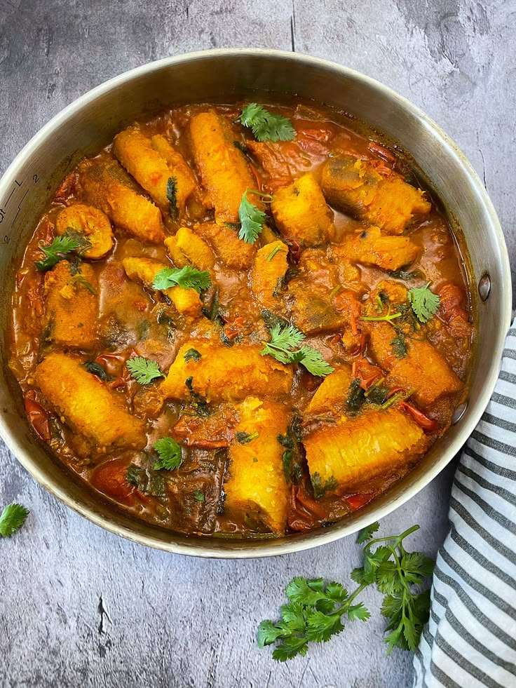
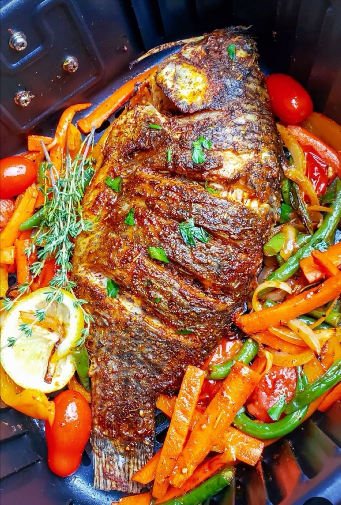
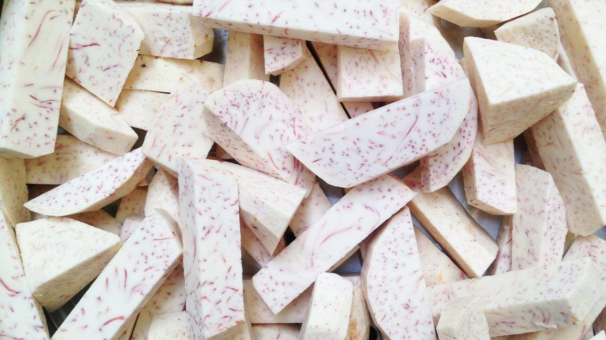
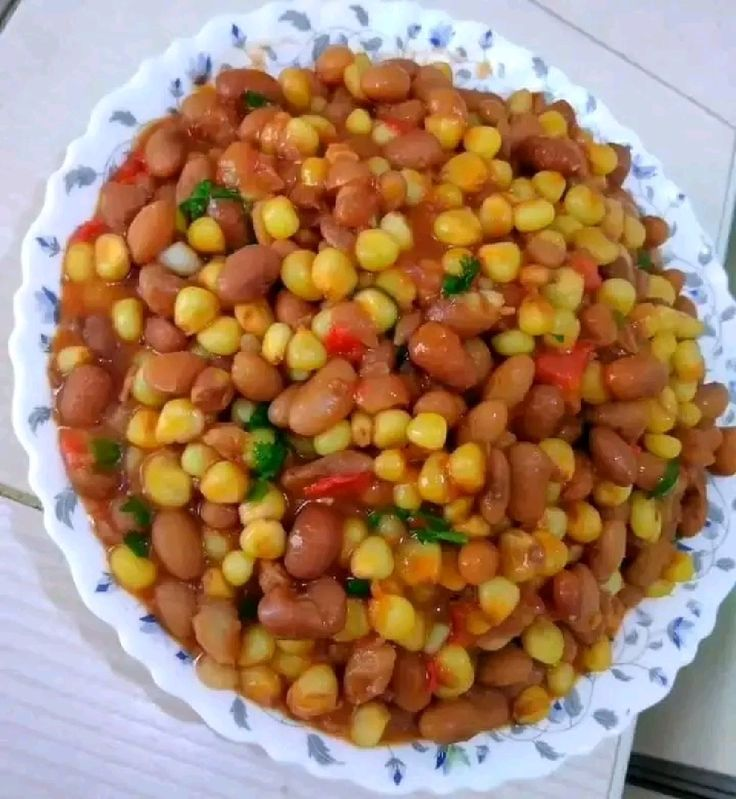
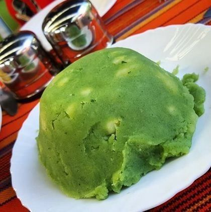

Medium
Kenyan
Pilau
Fragrant spiced rice slow-cooked with tender beef and pilau masala.
Authentic flavours from the heart of East Africa
From the smoky charm of Nyama Choma to the fragrant layers of Biryani — explore authentic East African recipes.

Showing 16 recipes

MediumFragrant spiced rice slow-cooked with tender beef and pilau masala.

EasyKenya's famous charcoal-grilled meat with smoky flavour.
 Easy
Easy
Classic Kenyan staple of maize porridge and sautéed greens.
Hearty boiled maize and beans with tomatoes and onions.
Traditional Kikuyu mash of potatoes, peas, maize and greens.
Fragrant layered rice with chicken and aromatic spices.
Soft coconut milk doughnuts — a popular Kenyan snack.

MediumFlaky layered flatbread, perfect with stew or chai.
Crispy pastries filled with spiced mince and peas.

EasyGreen bananas stewed with beef in rich tomato sauce.
 Easy
Easy
Fresh tomato, onion and coriander salsa.

MediumCrispy deep-fried fish with garlic and spices.
 Easy
Easy
Creamy rice cooked in coconut milk.
 Medium
Medium
Rich beef stew with carrots and potatoes.
 Easy
Easy
Crispy pan-fried whole tilapia.

EasySimple boiled arrowroots — a classic Kenyan breakfast.
Try different search terms or clear filters.
You haven't saved any recipes yet.

